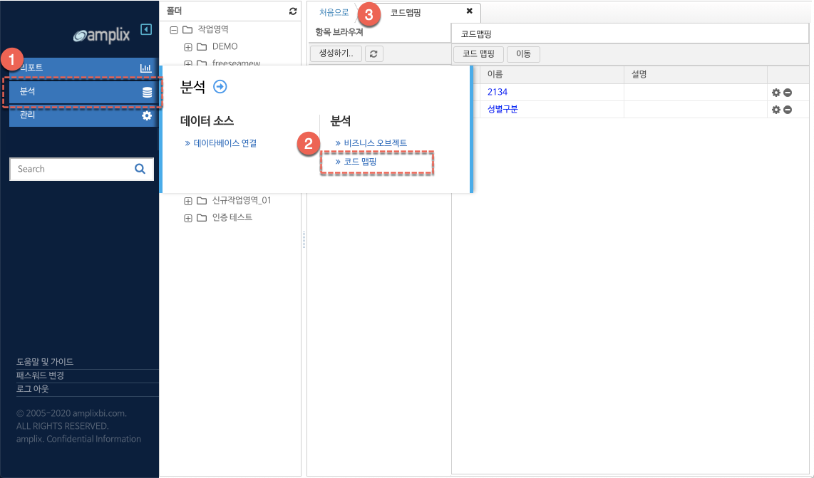
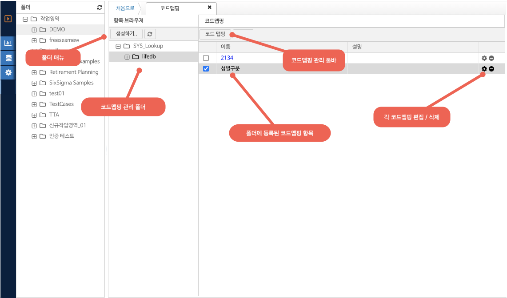

네비게이션
6.5. 코드 맵핑
코드맵핑
코드 맵핑은 데이터베이스의 값에 대한 설명을 맵핑하는 기능을 한다. 예를 들어 데이터베이스에 성별을 M, F 등 코드값으로만 표현되어 있는 경우 값에 대한 성별 설명인 남성, 여성으로 맵핑하는 기능을 의미한다.
코드맵핑 등록 및 관리
메인 메뉴의 분석 항목을 클릭한 후 서브 메뉴 분석 - 코드맵핑을 선택한다. 코드맵핑 관리 화면이 탭영역에 추가된다.

(그림 : 코드맵핑 메인 메뉴 접근 단계)
코드맵핑 화면 레이아웃
코드맵핑 화면의 레이아웃 구조는 다음과 같다.

(그림 : 코드맵핑 관리 화면 레이아웃)
폴더 메뉴를 클릭하여 현재 선택된 폴더의 하위 폴더를 생성할 수 있다. 코드맵핑 관리 폴더 클릭하면 해당 폴더에 등록된 코드맵핑 목록이 그리드에 나타난다. 코드맵핑을 수정하려면 목록의 설정 아이콘을 클릭한다.
코드 맵핑을 추가하려면 코드맵핑 목록 툴바의 코드맵핑 버튼을 클릭하여 신규 항목을 생성한다.
코드맵핑 수정
코드맵핑 항목 그리드에서 수정할 항목의 설정 버튼을 클릭한다. 신규 항목 등록을 위해서는 툴바의 코드 맵핑 버튼을 클릭하여 코드맵핑 수정 윈도우를 연다.
(그림 : 코드맵핑 편집 화면)
신규로 등록할 코드맵핑의 이름 / 설명을 입력 한다.
코드맵핑 편집 툴바의 기능은 다음과 같다.
-. 행추가 : 코드맵핑 데이터를 등록한다.
-. 선택항목 삭제 : 그리드의 체크 컬럼을 통해 선택된 항목을 삭제한다.
-. 위로 : 그리드에서 현재 선택된 항목을 한칸 위로 이동한다.
-. 아래로 : 그리드에서 현재 선택된 항목을 한칸 아래로 이동한다.
행 추가 버튼 클릭 후 각 값은 코드값과 코드에 대한 표시값 (값) 으로 구분된다. 필터의 콤보박스에 표시되는 값은 값 컬럼에 정의된 내용이며, 실제 데이터의 필터링 및 맵핑은 코드값을 기준으로 반영된다.
기존 코드맵핑의 값 / 코드값 을 변경하려면 해당 셀을 더블 클릭하여 편집 텍스트 입력창을 활성화 한후 새로운 값을 입력한다.
편집 환료 후 확인 버튼을 클릭하여 변경사항을 시스템에 저장한다.
코드맵핑 항목의 적용 범위는 필터 위젯의 프롬프트에 해당하는 값으로 사용된다. 보다 자세한 내용은 7.리포트 생성 및 활용 - 필터 위젯 편을 참고한다.